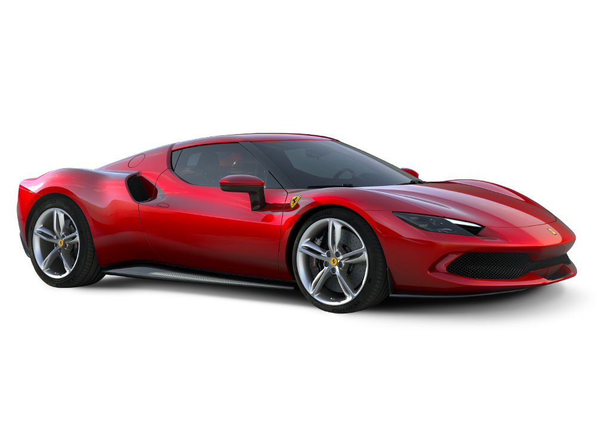
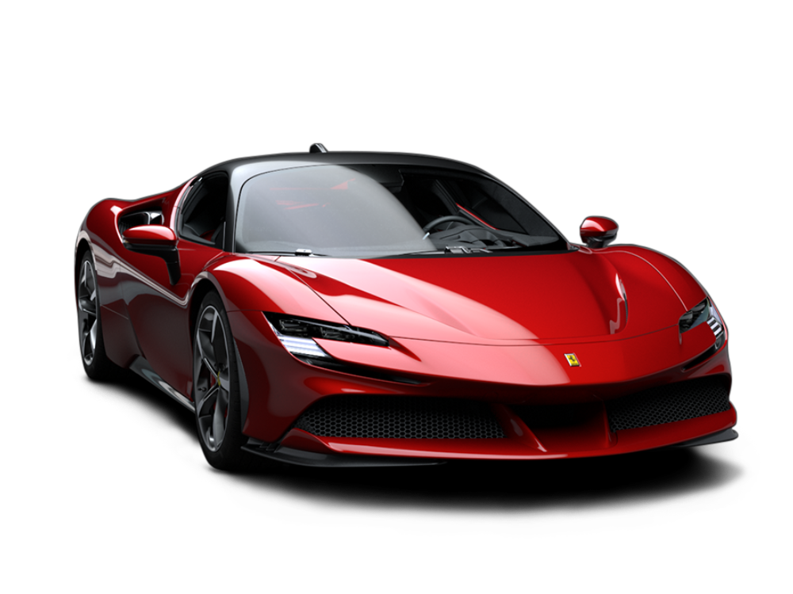

FERRARI PUROSANGUE
El primer coche en la historia de Ferari con cuatro puertas y cuatro plazas. Desde los primeros años de la marca, los coches con dos plazas traseras han desempeñado un papel importante en la compañía. Ahora, Ferrari ha creado un coche único y que representa el más puro ADN del Cavallino Rampante, donde prestaciones, placer de conducir y confort coexisten en perfecta armonía.
FERRARI 812 GTS
Es un superdeportivo descapotable de 800 CV, fabricado por Ferrari desde 2019. Está basado en el Ferrari 812 Superfast, con carrocería coupé, que se comercializó hasta entonces. Los Ferrari 812 son los Ferrari de serie más potentes de la historia y representan el tope de gama de la marca.
FERRARI 296 GTB
El 296 GTB, la evolución del concepto de berlinetta deportiva biplaza con motor central-trasero de Ferrari, supone toda una revolución para la Casa de Maranello al incluir un nuevo motor V6 de 120º acoplado a un motor eléctrico enchufable o plug-in (PHEV) capaz de entregar hasta 830 CV.
FERRARI SF90 STRADALE
El nombre del automóvil sintetiza el verdadero significado de todo lo que se ha logrado en términos de prestaciones. La referencia al 90 aniversario de la creación de la Scuderia Ferrari subraya el fuerte vínculo que siempre ha existido entre circuito y carretera en todos los Ferrari. Es la demostración perfecta de cómo Ferrari traslada inmediatamente a todos sus coches el conocimiento y las habilidades que adquiere en la competición.